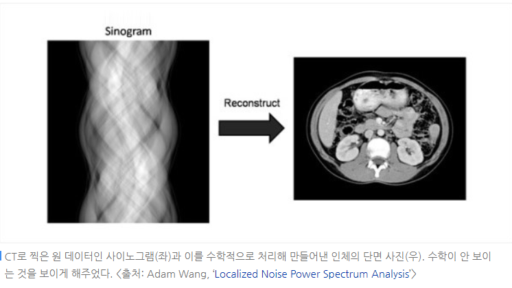

국어
국어  수학
수학  사회
사회  화학
화학  생명
생명  물리
물리  영어
영어  체육
체육 수학
사이노그램(미적분): CT사진의 원리 사이노그램은 다양한 각도에서 재구성된 영상 이미지를 줄무늬이미지로 바꾼 후 다시 복원하여 최종 사진을 얻는것이 간략하게 설명하는것 이다. 이것은 선형 보간법(양 끝점이 주어졌을때 그 중간쪽의 값을 유추하는것)을 쓰면 평균 제곱근 편차(RMSE) (추정 값 또는 모델이 예측한 값과 실제 환경에서 관찰되는 값의 차이를 다룰 때 흔히 사용한다.) 가 줄어든다고 한다.

복원하는 과정에서는 라돈 역변환이라는것이 들어가는데 이 라돈 역변환이란
우리가 각 부의별로 흡수하는 정도를 함수 F라고 했을 때 방사선을 쏘아서 얻는 결과를 RF라고 적고 라돈변환이라고 불러보변, CT촬영을 다시 설명하면 F는 알지 못하지만RF를 이용해서 F를 예측하는 것입니다. 이렇게 수학적으로 구하는 것을 라돈 역변환이라고 한다.
컴퓨터 단층촬영(CT)는
X선 CT(Computed Tomography)로서
아래 그림처름 인체를 가로지르는 횡단면영상을 제공해준다.

동작은 CT X선 발생장치가 있는 원형의 큰 기계에 들어가서 촬영하며
단순 X선 촬영과 달리 인체를 가로로 자른 횡단면상을 획득한다.
CT는 단순 X선 촬영에 비해 구조물이 겹쳐지는 것이 적어 구조물 및 병변을
좀더 명확히 볼 수 있는 장점이 있다. 단면상을 얻는다는 점에서 MRI와 CT는 공통점이 있지만,
CT는 X선을 이용하여 영상을 얻고, MRI는 자기장 내에서 고주파를 전사하여 영상을 획득한다는 차이점이 있다.
다중채널 CT(MDCT, multi-detector CT)는
촬영 후 영상을 재구성하여 MRI처럼 원하는 단면상 및 입체적인 삼차원(3D) 영상도 자유로이 얻을 수 있다.
아래는 CT의 중심부인 X-선 스캐너부분이다.

CT장비의 중심부엔 X선을 방출하는 부분과 검출하는 디텍터가 보인다.
컴퓨터 단층촬영(CT)의 경우는
촬영 기법에 따라 2~10mSv 정도 피폭되며 약 8개월에서 3년간 일상에서 노출되는 정도의 방사선량이다.
연간 약 2mSv 정도의 양이 일상생활시 노출된다고 한다
CT의 원리를 살펴보자.
아래 그림처름 둥근 원통속의 물체를 영상화하는 것이 목표인데
디텍터에 물체를 지나온 투과선의 양이 누적치량으로 합쳐진다.
이러한 상황은 레이더나 MRI나 지질탐사등에도 다양하게 이용되는 공통기술같은 것이다.
둥근 원통속의 물체를
있는 그대로 두고 투과선만 조사하여 내부물체를 영상화할려면
물체를 0도~180도로 돌려가며 찍든가
물체는 그대로 두고 빔을 돌려가며 찍으면
물체를 투과한 빔의 량을 계산하여 단면상을 만들수 있다.

이렇게 검출한 데이타는 물체를 투과정도에 따라 데이타누적량이 다르기에 물체의 정보를 가지고 있다.
물체의 360도 표현은 180까지의 데이타를 미러링하여 구하면 된다.
여러 각도로 X선 사진을 찍어 얻은 그래프를 시각화한 것을 사이노그램(sinogram)이라 한다
사이노그램(sinogram)은
아래 그림처름 단순 사각형을 지나온 투과누적치를
가로축으로 각이 0도부터 180도까지 표시하고 각 각도마다 중심축을 기준으로 해당하는 그래프의 높이를 명암을 써서 시각화한 것이다.
즉 여러 각도로 X선 사진을 찍어 얻은 그래프를 시각화한 것을 사이노그램(sinogram)이라 한다.
흰색에 가까울수록 흡수가 많이 된 경우로
상당히 흡수가 많이 일어난 경우는 물체가 투과빔을 막았다고 볼수 있다
이렇게 투과량으로 만들어진 사이노그램을
어떤 처리를 해야 우리가 알수 있는 영상으로 바꿀수 있을까?
아래 사이노그램은 X선이 흡수된 량을 XY평면에 표시하는 것으로 이것으로 물체를 알수는 없다.

위 그림은 가로축은 0도에서 180도로 스캔을 하면서 투과량의 크기를 도시한 그래프이다.
이렇게 투과량으로 만들어진 사이노그램을
어떤 처리를 해야 우리가 알수 있는 영상으로 바꿀수 있을까?
수학 이론중에 라돈 변환’(Radon Transform)이라는 것인데,
여기서 라돈은 오스트리아의 수학자 라돈(Johann Radon, 1887-1956)을 말하며
위의 사이노그램이 수학적 라돈변환을 물리적으로 수행한 결과이고
원래영상을 얻으려면 역라돈변환을 수행하면 된다는것이 알려져 제품화의 과정을 거치게 되었다.
라돈변환 (Radon transform)
회전각 추정단계(라돈변환)
주어진 선이나 에너지 전달 경로를 따라 대상체의 물성을 적분하는 것.
토모그래피에서는 투영을 얻기 위한 파선 적분을 말하며, 탄성파 자료처리에서는 타우-피 변환 또는 경사 중합이라고 한다.
이차원영상을 라돈 변환하면 1차원 벡터값으로 변경하여 계산량을 줄일수 있다.
회전각 추정단계에 라돈변환이 많이 사용된다.
X선이 흡수된 량을 XY평면에 표시하는 것으로 X선이 통과한 영역의 길이를 구하는 적분의 과정이며
푸리에 변환의 일종인 라돈 변환을 사용하여 구한다.
푸리에 변환은 시간영역을 주파수영역으로 변환하는 방법으로 그 역변환은 적분을 통해 얻을수 있다.
라돈 변환의 역변환 역시 적분을 통해 얻을 수 있다..
실제적용은 적분을 하는 것이 아니라 적당히 많은 구간으로 쪼개 측정치를 구한후 그 값들을 더하는 방법을 사용한다
물체를 투과하여 도착한 값이 선적분(선누적값)한 형태로 나타나서 라돈변환과 같은 효과를 보인다.
즉, X선 사람을 지나와서 센서에 감지되면 자동적으로 라돈변환과 같은 효과가 있는 것이다.
라돈변환 : http://www.mathworks.com/help/toolbox/images/f21-25938.html
사이노그램(sinogram)을 원래의 영상으로 만들려면
역라돈변환을 하면 된다.
역라돈변환: "http://www.mathworks.com/help/toolbox/images/bq59t3_-1.html
라돈변환/역라돈변환은 CT뿐만아니라 MRI나 레이더, 지질탐사같은 목표물에
어떤 선(X선,전파,음파,레이져...)을 방사하여 2차원영상과 3차원영상을 얻고자 하는 모든 분야에
아주 아주 유용하게 사용되는 기술이라 한다.